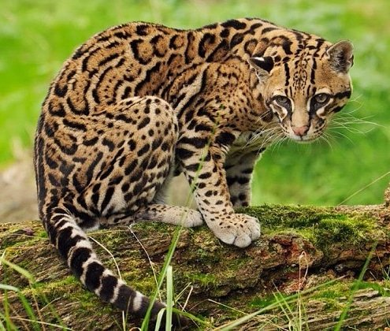

The ocelot (Leopardus pardalis) is primarily found in the forests throughout Costa Rica. Being relatively large for a cat, the spotted
feline is only out grown by the Jaguar and Puma. It has large paws which have granted it the Spanish name mano gordo (fat hand). These
“fat hands” allow for the cat to swiftly climb trees and cross streams with ease. The base color of its coat can be grayish to cinnamon,
with black spots that form streaks on the neck or elongated spots on the body. Its tail is marked with incomplete bands. Each individual
has a unique coat pattern. In the past, ocelots have been devastated by the fur traders. In the 80’s, 130,000+ pelts were sent to the
United States alone. It is illegal to import spotted furs now, but it now faces habitat destruction as most of the Costa Rican cats do.
The ocelot hunts prey from small rodents to iguanas and peccaries. This cat is very secretive and is not usually seen. These beautiful
cats are nocturnal and sleep in trees during the day. Keep your eyes on the trees and you may see one!

or explore what other animals we have in the zoo Sloths, Toucans, and Jaguars